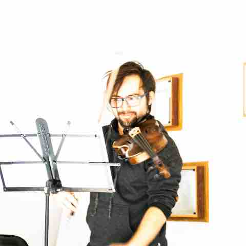
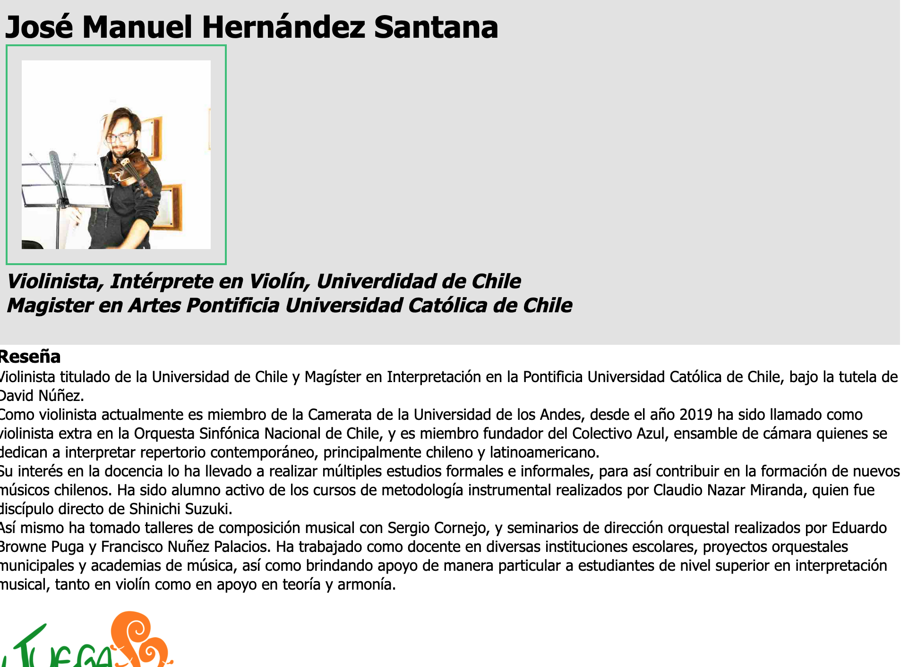
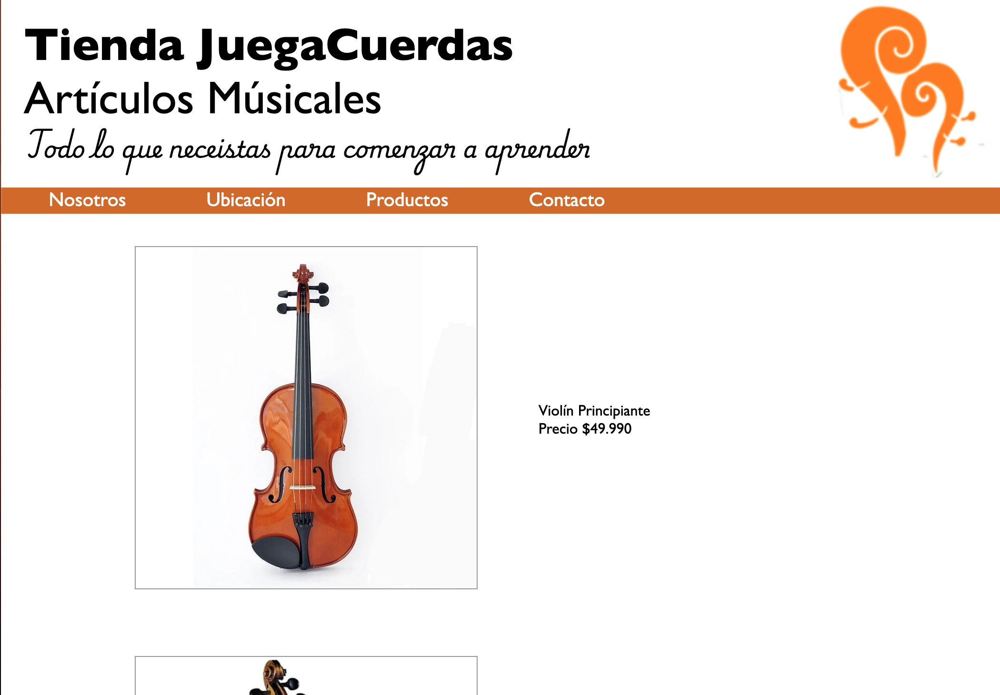
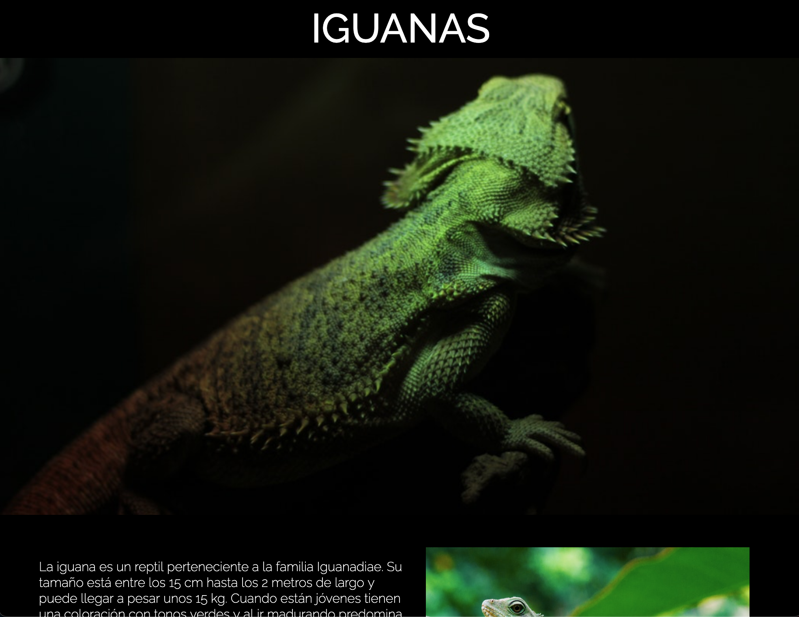
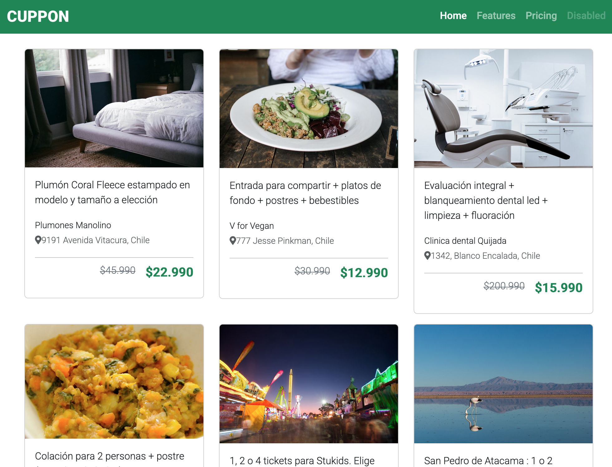

Acerca de mi
Violinista, magister en artes de la Universidad Católica de Chile y estudiante de Desarrollo Web Full Stack Javascript

Violinista titulado de la Universidad de Chile y Magíster en Interpretación de la Pontificia Universidad Católica, actualmente es miembro de la Camerata de la Universidad de los Andes y ha sido violinista extra en la Orquesta Sinfónica Nacional de Chile. Su interés en la docencia lo ha llevado a realizar estudios formales e informales, incluidos cursos de metodología instrumental y talleres de composición. Ha trabajado como docente en varias instituciones y es fundador de la Escuela de Música JuegaCuerdas, donde aplica su experiencia en creación de currículum y métodos de evaluación en la formación de nuevos músicos chilenos.
Actualmente estudia Desarrollo Web Full Stack Javascript en Desafío Latam.
Estudios
2025: Estudiante de Desarrollo Web Full Stack Javascript en Desafío Latam
2021 a 2023: Estudiante de Magister en Artes, mención en interpretación musical en la Pontificia Universidad Católica de Chile. Realizando investigación y recopilación del repertorio para violín solo de compositores chilenos, bajo la tutela de David Nuñez. Magister financiado por beca ANID
2021 a 2023: Estudiante de Magister en Artes, mención en interpretación musical en la Pontificia Universidad Católica de Chile. Realizando investigación y recopilación del repertorio para violín solo de compositores chilenos, bajo la tutela de David Nuñez. Magister financiado por beca ANID
2019 a 2020: Alumno de violín de la Academia Fammusic, con Lorena González Echazú
2018: Concierto de Título en la Sala Isidora Zegers
2008 a 2017: Estudiante Licenciatura en Artes mención Interpretación Musical en Violín en Facultad de Artes de la Universidad de Chile.
2004 a 2009: Enseñanza básica y media completa en el Instituto Nacional Gral. José Miguel Carrera.
2018: Concierto de Título en la Sala Isidora Zegers
2008 a 2017: Estudiante Licenciatura en Artes mención Interpretación Musical en Violín en Facultad de Artes de la Universidad de Chile.
2004 a 2009: Enseñanza básica y media completa en el Instituto Nacional Gral. José Miguel Carrera.
Experiencia Musical
Violinista y COFUNDADOR del Colectivo Azul, ensamble de música contemporánea dedicado principalmente a la
difusión de la música chilena de arte
Violín extra de la Orquesta Sinfónica Nacional de Chile
Tercera temporada de conciertos de Colectivo Azul, realizando conciertos en la Sala Isidora Zegers
Violín extra de la Orquesta Sinfónica Nacional de Chile
Tercera temporada de conciertos de Colectivo Azul, realizando conciertos en la Sala Isidora Zegers
Primera temporada del Colectivo Azul, dando 4 conciertos en la Sala América y el Salón de Honor de la Academia Chilena de Bellas Artes
Experiencia Docente
Fundador de la Escuela de Música JuegaCuerdas. Escuelabr cuya misión es cambiar el enfoque de la docencia musical infantil y juvenil en Chile
Profesor y ayudante de violín de la academia Fammusic, dirigida por Lorena González Echazú
Profesor de violín de la Casona de La Florida
Profesor y ayudante de violín de la academia Fammusic, dirigida por Lorena González Echazú
Profesor de violín de la Casona de La Florida
Monitor de violín y director asistente de la Orquesta Juvenil de la Comuna de Lo Prado
Monitor de violín en la Escuela Municipal de Música, comuna de Lo Espejo
Portafolio Desafío Latam



